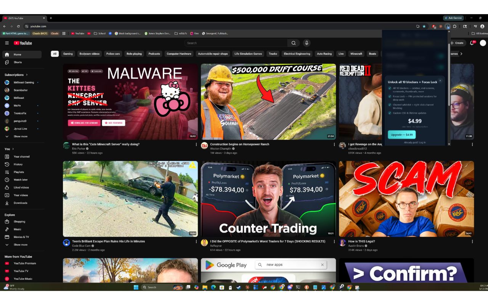
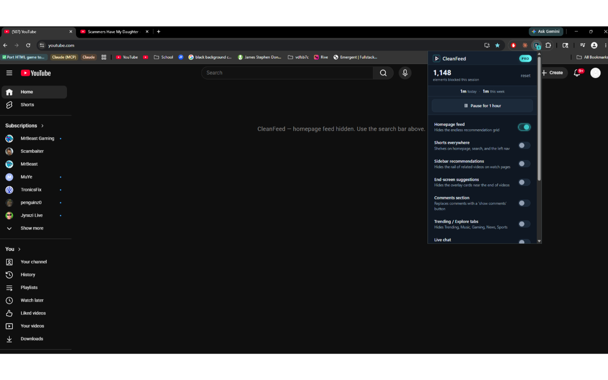

Let's be honest about what you're up against. YouTube is not a neutral library you visit and leave. It is a recommendation engine with a multi-billion-dollar incentive to keep you watching for as long as possible, and almost every surface of the product has been tuned toward that single goal. Understanding how it hooks you is the first step to making it less addictive — because most of the tactics below work by quietly disabling the specific mechanisms that pull you back in.
There are four big hooks. The homepage feed is a wall of thumbnails personalised to your weakest moments, engineered to make sure something always looks more interesting than closing the tab. Autoplay removes the natural stopping point between videos — you never actively choose the next one, so you never get the pause where you might decide to stop. Recommendations — the sidebar, the end-screen wall, "up next" — exist to convert one video into a session. And Shorts, the stickiest of all, is an infinite vertical feed of dopamine hits explicitly modelled on the most addictive parts of TikTok. None of this is a willpower failure. It's a system better-funded than your self-control — but you can dismantle it piece by piece.
What follows is twelve tactics, ordered roughly from easiest to most committed. Mix and match — most people get the bulk of the benefit from three or four. I'll flag honestly where a tactic decays over time or needs a tool to enforce.
The 12 tactics
-
Hide the homepage feed
The Home feed is the single biggest driver of unplanned watching, so removing it is the highest-leverage change you can make. Manually: bookmark
youtube.com/feed/subscriptionsand set it as your homepage and new-tab shortcut so you never see Home. Enforced: an extension can replace the Home feed with a blank page on every load. Once the wall of thumbnails is gone, you have to search for what you want — so you arrive with intent instead of grazing. -
Kill Shorts
Shorts is the most aggressive hook on the platform and the hardest to leave once you start swiping. There's no official permanent "disable Shorts" switch, so the durable fix is an extension that hides the shelf, the sidebar entries, and the
/shorts/player. Manually you can dismiss the homepage shelf and, on mobile, sometimes hide it for 30 days — but both come back. If one tactic here is worth enforcing with a tool, it's this one. -
Disable autoplay
Autoplay turns "one video" into an evening. Flip the toggle off — it sits at the top of the right-hand sidebar on desktop and on the player on mobile. This restores the stopping point: when a video ends, nothing starts, and you get the half-second of clarity to close the tab. YouTube has a habit of quietly re-enabling autoplay after updates, so if you keep finding it back on, an extension that forces it off on every load solves the nagging.
-
Remove recommendations
The sidebar "up next" list and the end-screen wall exist to convert the video you chose into three you didn't. Hide them and a finished video leaves you on a clean page instead of a buffet. YouTube has no setting for this, but an extension can blank the related-videos sidebar and the end-screen cards. The effect is striking: watching one video stops feeling like standing at the top of a slide.
-
Hide thumbnails
This one sounds extreme and is quietly brilliant. Thumbnails are optimised to trigger curiosity — the shocked face, the red arrow, the "you won't believe." Replacing them with plain text titles strips out the visual bait, so you judge videos on what they are rather than how clickable the image is. Several extensions offer a "hide thumbnails" mode; try it for a week and most people find their click rate on junk drops sharply.
-
Turn on grayscale
Colour, especially YouTube's red, is part of the reward circuitry. Switching your whole screen to grayscale makes the platform measurably less compelling — the same trick digital-wellbeing researchers recommend for phones. It lives under Accessibility → Colour Filters on macOS, Windows, Android, and iOS, and you can usually bind it to a keyboard or triple-click shortcut. A grey Shorts feed is a much weaker pull than a vivid one.
-
Use a time tracker
You can't manage what you don't measure, and almost everyone underestimates their YouTube time by half. A tracker that shows your real daily total turns a vague "I watch too much" into "I watched 94 minutes today" — far harder to ignore. The best trackers count only focused, visible YouTube tabs, not a video left paused in the background, so the number reflects actual attention. Watching the figure climb in real time is, for many people, the intervention that finally lands.
-
Set a schedule
Unstructured access is what makes a habit a compulsion. Decide when YouTube is allowed — after 7pm, or weekends only — and block it the rest of the time. Site blockers and several focus extensions let you define schedules so the site won't load during work hours. The point isn't to ban YouTube; it's to make watching a decision you made earlier, calmly, rather than one you make impulsively at 11am with a deadline looming.
-
Use Subscriptions-only mode
The gentlest high-impact tactic, and it's free. Live in the Subscriptions tab (
youtube.com/feed/subscriptions) instead of Home. It shows the long-form uploads from channels you chose, newest first, with no algorithmic injection. You keep the creators you love and lose the rabbit-hole discovery that eats hours. Make it your default landing page and you've removed the recommendation engine without installing anything. -
Run Pomodoro study blocks
If you genuinely need YouTube for work or study but it keeps swallowing the session, structure it. The Pomodoro method — 25 minutes focused, 5 minutes break — pairs well with YouTube: lock the distracting elements during the 25, breathe during the 5. Some focus extensions build a Pomodoro timer right into YouTube that auto-locks every blocker during the focus phase, so the temptation isn't even available until the timer says so. It turns YouTube from an open tap into a metered tool.
-
Use a commitment device (Focus Lock)
The uncomfortable truth most of these tactics share: a toggle you can turn off is a toggle you will turn off the moment you're bored. A commitment device closes that loophole — borrowed from behavioural economics, it makes your future impulsive self unable to undo a decision your present rational self made. In practice that's a PIN-locked blocker you can only disable by holding a button for 60 seconds, or a schedule you can't edit once it starts. The friction is the feature: a few seconds of reinforcement at exactly the moment willpower is weakest.
-
Sign out or use a separate browser profile
A logged-out, profile-isolated YouTube is dramatically less addictive, because the recommendation engine has far less data to personalise against. Sign out and the Home feed becomes generic and boring. Better still, create a dedicated "work" browser profile (two clicks in Chrome or Firefox) with no YouTube login, the focus extensions installed, and none of your usual bookmarks. When you're working you live in that profile, and the addictive, personalised YouTube simply isn't reachable. Free and surprisingly durable.
-
Go system-wide with a hard blocker
For the heaviest cases — where you'll switch browsers or grab your phone to dodge any single-browser block — the answer is a system-wide blocker covering every app and browser at once, on a schedule you can't easily disable. It's the nuclear option: overkill if you only mildly overuse YouTube, but the one thing that finally works for a genuine compulsion.
The extensions, honestly compared
You don't need an extension for grayscale, signing out, or the Subscriptions tab — do those today, for free. But if you've tried the manual route and keep sliding back, a tool that enforces your choices is the difference-maker. Here are four worth installing. I built one of them, so weigh the CleanFeed entry accordingly — and for most people I genuinely recommend starting with Unhook.

Unhook — free, the gold standard for hiding distractions
If your problem is simply that YouTube is too noisy — too many thumbnails, Shorts, recommendations, and end-screens — install Unhook and you may be done. It's open source, has more than 800,000 users, and gives you granular toggles for nearly every distracting element: Home feed, Shorts, sidebar recommendations, comments, thumbnails, autoplay, and more. The free version covers everything most people need, with an optional Pro tier for extras. What Unhook deliberately does not include is any lock or commitment mechanism — every toggle is one click to turn back on. For the visibility problem, it's the best free tool there is, and I recommend it without reservation.
CleanFeed — pay-once, adds the anti-addiction layer Unhook leaves out
CleanFeed is for the person Unhook doesn't fully solve: the one who hides Shorts, then un-hides them ten minutes later because the toggle is right there. It ships 17 individual blockers (Shorts, homepage feed, sidebar recs, comments, autoplay, end-screen suggestions, thumbnails, and more), but the reason it exists is the anti-addiction layer. Focus Lock lets you set a 4-digit PIN, turn your blockers on, and only disable them mid-session by holding a button for a full 60 seconds (the PIN is stored salted-SHA256, never plaintext). A built-in Pomodoro timer (25/5) auto-locks every blocker during focus blocks, and a time tracker counts only focused, visible YouTube tabs. It's $4.99 once — no subscription, no account, no telemetry — and the free tier keeps any 2 blockers on forever plus the daily tracker. It's new on the Chrome Web Store with a small day-one user base, so it lacks Unhook's track record. Choose it for the commitment device, not the element-hiding — that's the wedge.

StayFocusd — free, a time budget across every site
StayFocusd applies the "schedule" and "time tracker" tactics to your whole browser rather than YouTube specifically. You set a daily time budget — say, 30 minutes — and once it's spent, the blocked sites won't load for the rest of the day. It's free and great if YouTube is one of several time-sinks (Reddit, news, X) rather than your only problem. The trade-off: no granular YouTube controls, so it can't hide Shorts or recommendations — it's a blunt time gate, which for some people is exactly right.
Cold Turkey Blocker — $39 one-time, the system-wide lockdown
Cold Turkey is a desktop app, not an extension, blocking across every application and browser at once on a schedule you genuinely can't wriggle out of — the enforcement engine behind tactic 12. At $39 one-time it's the priciest option here and overkill if you only mildly overuse YouTube, but if you'll switch browsers to bypass any in-browser block, it's the one tool on this list that actually stops you. For a real compulsion, it's worth every cent.
So what should you actually do?
Start free and today: switch your screen to grayscale, disable autoplay, and make the Subscriptions tab your home base. Those three remove the worst of the four hooks for nothing. If you keep relapsing because the manual settings are too easy to undo, install Unhook first — free, trusted, and its toggles handle the noise. Add StayFocusd if YouTube is one of several sites eating your day. Reach for CleanFeed only if you've hidden distractions before and caught yourself switching them back on — Focus Lock, Pomodoro auto-lock, and the focused time tracker are the reason it exists. And if nothing in the browser holds, Cold Turkey is the system-wide backstop. The right answer isn't one product; it's the lightest tactic that actually sticks for you.